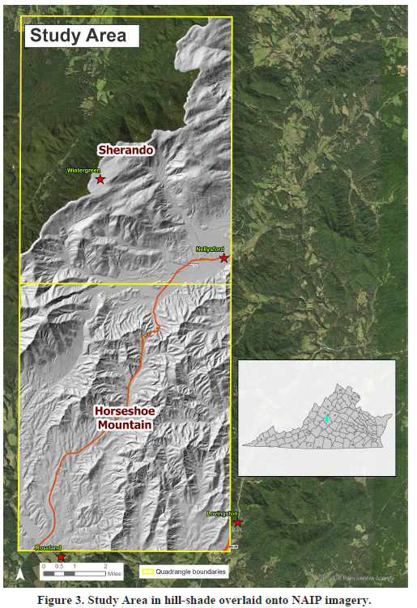
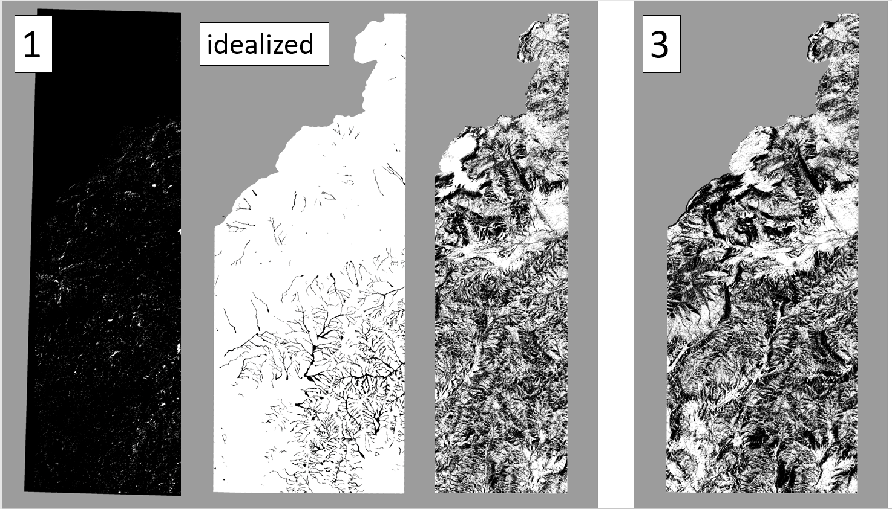
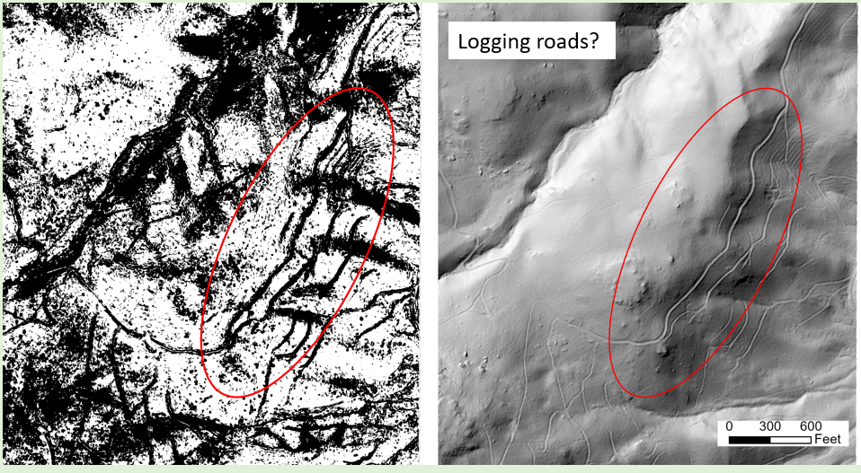

UMW GIS Capstone
Classifying landslides in Central Virginia
Project Details
The Virginia Department of Energy maintains a database of landslide GIS features across the state. As a technician working for the Department's geology and mineral resources division, I spent many hours collecting these features by interpreting LiDAR-based DEMs, historical imagery and geologic maps.
By the summer of 2020, I had learned about image classifications in my remote sensing course at UMW and wondered if it could be applied to DEMs, specifically for the identification of historical landslide features.
The approach taken here did not yield the "easy button" I was looking for in landslide classification, but it was a good starting point for refining a process to automatically identify these features. There are several concrete next steps that
would improve classification accuracy. These days, I think the growing availability of AI would significantly change the process.
Image Gallery

The study area spanned the Sherando and Horseshoe Mountain quadrangles, both dense with historical landslide features thanks to Hurricane Camille.

An idealized classification of the study area vs. my results. Black = landslide, white = no landslide

Historical logging roads were often picked up as landslide features by the classification algorithm.